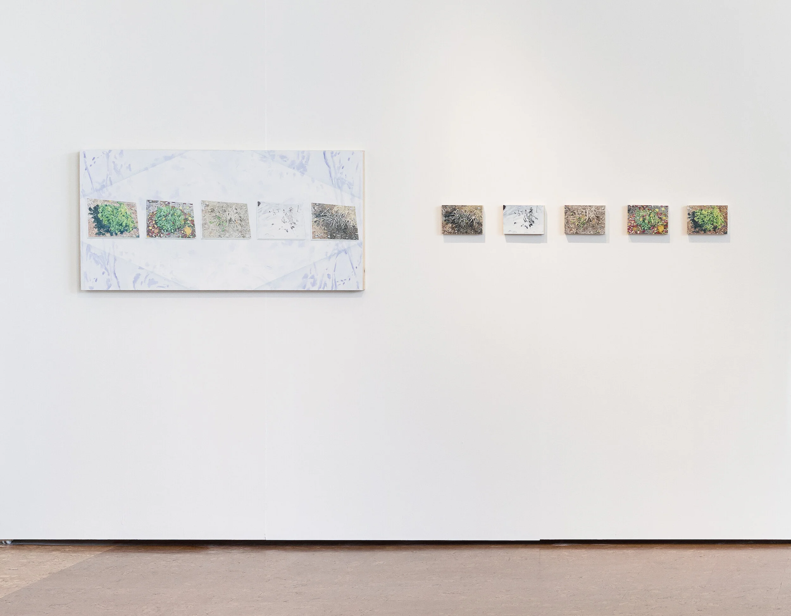
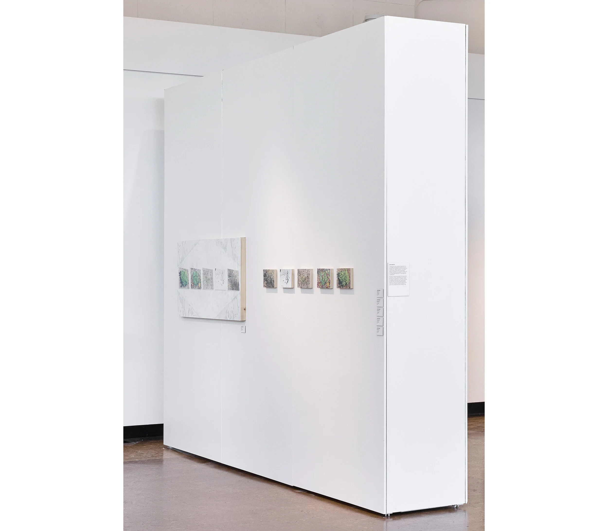
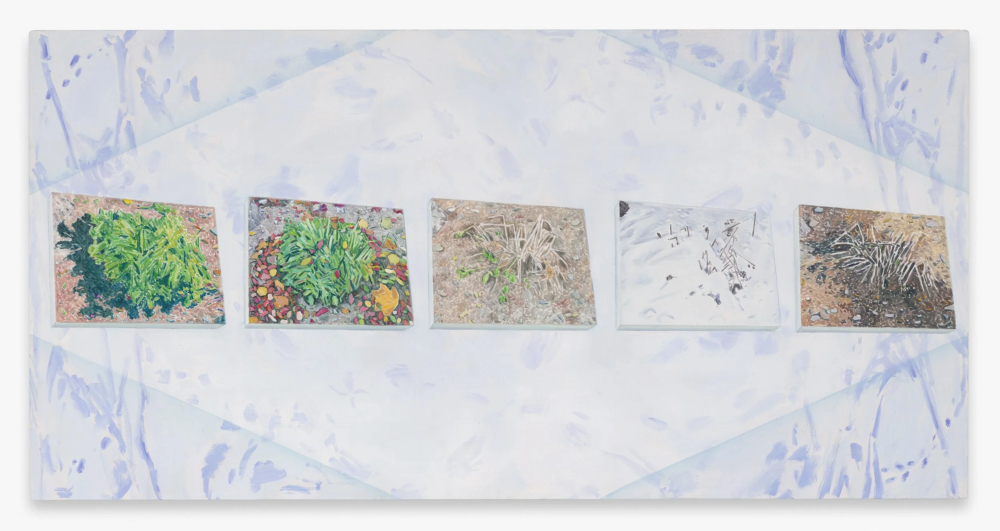
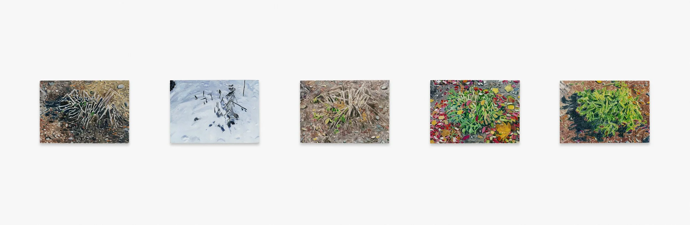

Accompanying text:
This past year forced a heightened awareness of our surroundings. My painting practice grew out of new sensations and responded to the rest and rehabilitation that grew from a global recalibration. I use a dreamy and sun-soaked palette, preserving the gesture of the paintbrush as if to freeze a whisper. I am constantly observing my environment, in the pursuit of translating daily observations in a meaningful and compelling way.
Recently, my attention has shifted to the natural world. In particular, I’ve been responding to a shrub around the corner from my apartment. In October, I noticed her covered in early autumn snow. The next day, she was deflated, but still prickly, like a sleeping spider. A lot was in flux, but I now had something stable to observe: this shrub and her journey through the winter. I knew I had to paint her; and not as an object or a plant, but as a relationship, an idea, a feeling, a time.

